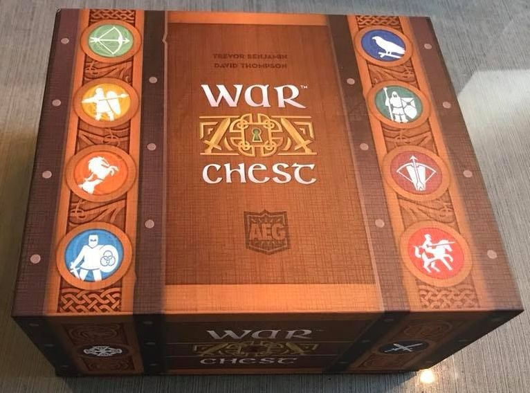
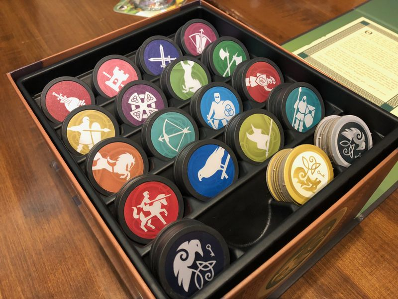

War Chest
 Summary
War Chest is an all-new bag-building war game! At the start of the game, raise your banner call (drafting) several various
units into your army, which you then use to capture key points on the board. To succeed in War Chest, you must
successfully manage not only your armies on the battlefield, but those that are waiting to be deployed.
Each round you draw three unit coins from your bag, then take turns using them to perform actions. Each coin shows a
military unit on one side and can be used for one of several actions. The game ends when one player — or one team in
the case of a four-player game — has placed all of their control markers. That player or team wins!
—description from the publisher
Categories
- Genre: Abstract strategy
- Players: 2 or 4
- Game length: ~30 minutes, longer if 4 players
- Difficulty: Medium (2.26 out of 5.0)
My favorite abstract strategy game. The components are great and the "theme" of a general pushing chips over a
map of the battlefield is cool. Each game feels different and it has that "lets play again" vibe to it.
—Wrecktangled, 2020 https://boardgamegeek.com/boardgame/249259/war-chest/ratings
Publishing Info
- Year Released: 2018
- Designers: Trevor Benjamin & David Thompson
- Publisher: Alderac Entertainment Group (AEG)
- Full credits: Here